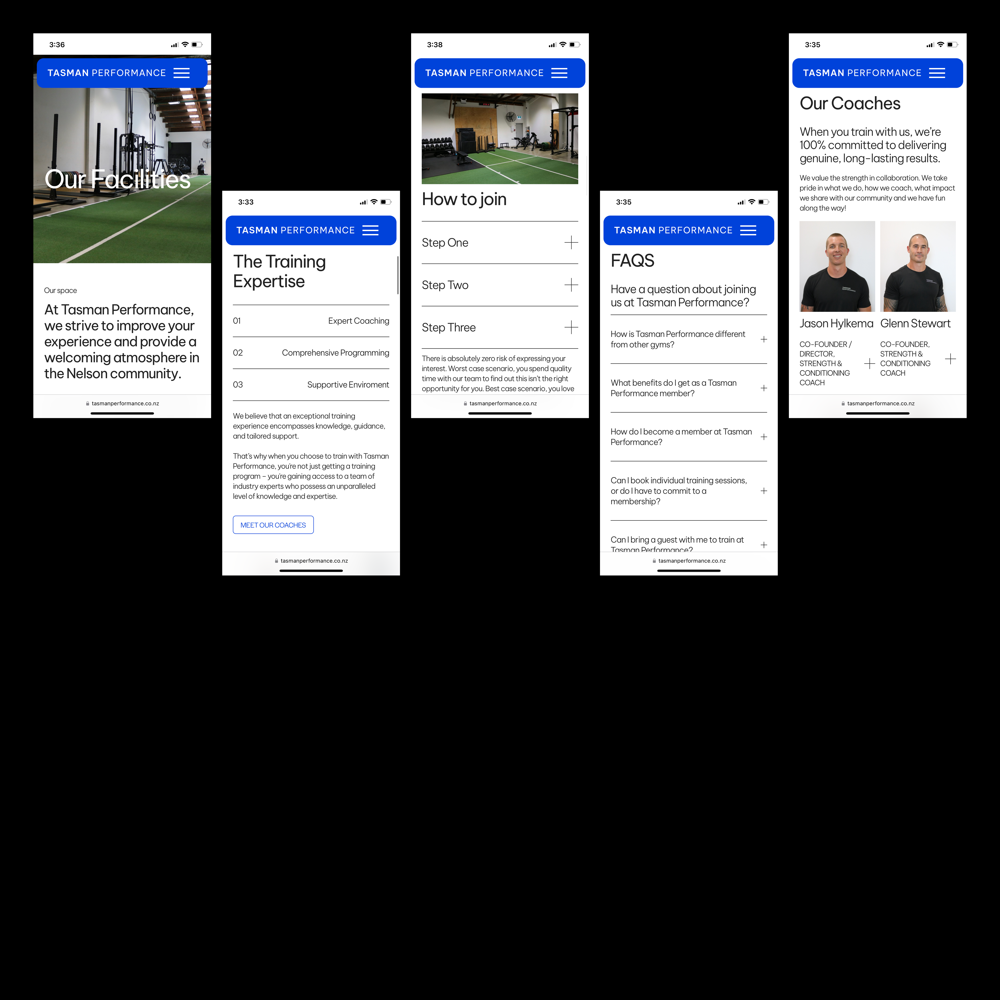
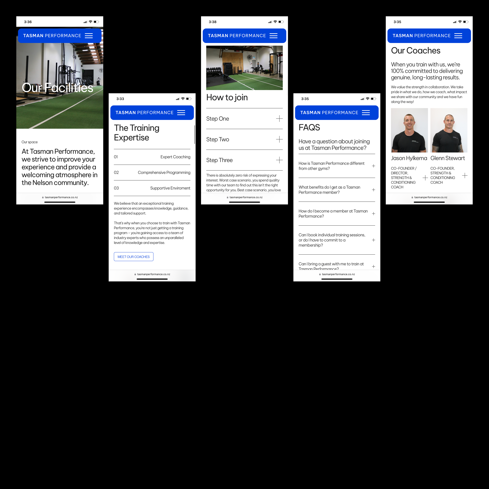
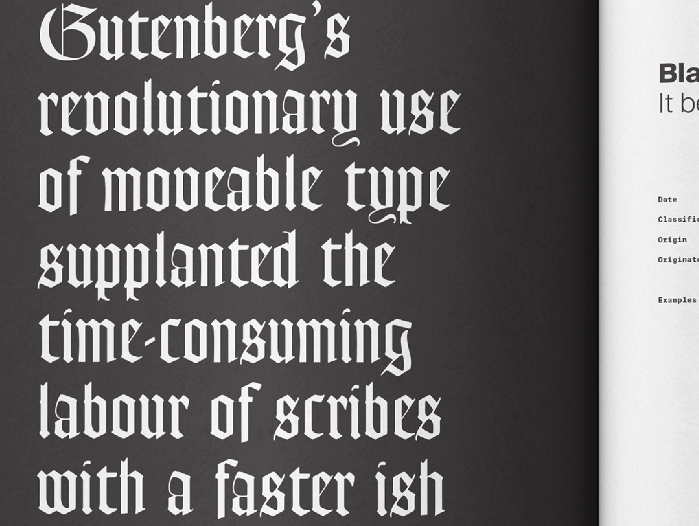
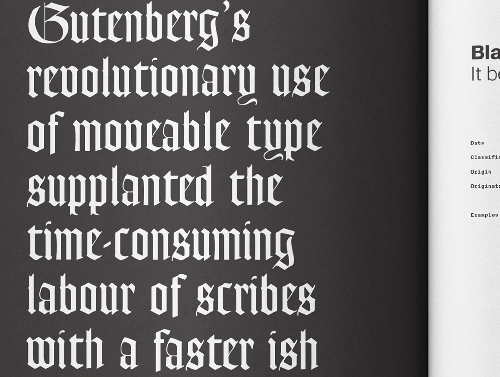

Graphic designer with a strong passion for print, visual identity and digital design.
↓
Kia ora! I’m Ruby, a Graphic Designer based in Queensland Australia. Graduate from Massey University's Toi Rauwhārangi with a Degree in Visual Communication Design (Hons). Below is a selection of my recent mahi and university projects.
But first... a little bit about me!
Motivated and inspired by simple, strong and striking aesthetics, for the past six years I have applied my design thinking across various mediums.
I have worked on multiple projects that explore the world of digital, print, product, identity, editorial, typographic, human-centred, UX, UI and service design (to name a few) and have loved almost every minute of it.
I thrive in environments surrounded by others with passion and empathy and am consistently driven to design for good, for the future and for the people.
Optimistic, bubbly, friendly, positive, driven, criminally punctual, passionate, good listener, enthusiastic, empathetic, excitable, curious and a huuuge people person.
↓
Alright, that’s enough for now, you can find out more about me later...
the good stuff is this way! ↓
Design works
↓
Wānaka Festival of Colour
[2025] Brand Identity,
Print, Digital Design &
Web Management
The Wānaka Festival of Colour is a biennial celebration of arts and performance set in the heart of the Southern Lakes. Ahead of the 2025 festival, I worked closely with the team to refresh their visual identity — responding to feedback that their existing palette felt flat and disconnected from the region’s creative energy. Together, we developed a vibrant new colour system that better reflected the personality of Wānaka and the festival’s bold, inclusive spirit.
The design work spanned a wide range of festival materials, including posters, brochures, booklets, crew passes, signage, digital assets, and ongoing Webflow website management and content updates.
Festival of Colour Website →

Community Koha
[2024] Print & Asset Creation
Cokoha is a platform app developed by Community Koha that empowers communities in Aotearoa to share and exchange resources with a simple tap. In the lead-up to its launch, I worked with the team at Manawa Māori to design a suite of bilingual marketing materials, including a brochure, flyer and poster.
The resources were created to resonate with a wide range of communities across Aotearoa, while reinforcing Cokoha’s identity as a Māori-owned and led initiative. Te reo Māori was thoughtfully integrated alongside English to celebrate language revitalisation and encourage meaningful engagement through connection and generosity.
Manawa Māori Case Study →
Project 100
[2024] Print, Social Media,
Digital UX & UI Website Refresh
Project 100 is a contemporary art space and creative initiative based in Whakatū, Nelson Aotearoa, supporting bold, interdisciplinary work by emerging artists and designers. I contributed design work across print, digital, social media and other visual outputs to help shape and strengthen Project 100’s public-facing identity.
This mahi supported the project’s goal of fostering experimentation and connection, creating a cohesive visual language across platforms and touchpoints.
Project 100 Website →


Manawa Māori
[2024] Digital UX &
UI Website Refresh
Manawa Māori, Aotearoa's leading provider of reo Māori services, needed a new website to accommodate growing demand. Working closely within our tīma, we started fresh and developed a brand new platform, integrating a refreshed brand identity to enhance user experience and accessibility. The website now digs deep into our story, our impact, our why and effectively guides clients through our comprehensive offerings, reinforcing Manawa Māori's commitment to promoting Māori language and culture.
The site also allows users to access a wide range of resources, including digital downloads, course offerings and free useful tools. The result is a more in-depth learning experience for users, making it easier for them to explore our offerings and learn more about Manawa Māori as a whole.
Manawa Māori Website →


Clay Week
[2024] Digital UX, UI &
Social Media Content & Managment
Clay Week Nelson 2024, an eagerly anticipated celebration of ceramic artistry in Nelson, Aotearoa, required a captivating online platform to showcase its diverse workshops and ignite enthusiasm for the festival. Collaborating closely with the event organisers, a visually engaging website was crafted to embody the essence of creativity and community that defines Clay Week Nelson.
Drawing from the festival's brand identity and inspired by old school NZ Potter magazines, a fresh and cohesive visual narrative was woven into the site, ensuring it resonates deeply with its audience. The goal was to create an intuitive and immersive experience that not only informs visitors about the workshops and events but also captures the vibrant spirit driving Clay Week Nelson.
Clay Week Website →


Tasman Performance
[2024] Digital UX & UI
Tasman Performance is a private gym facility with a limited number of clients that they work closely with to help achieve their goals based in Whakatū, Aotearoa. Tasman Performance needed an upgraded website that visually communicated its community, services and people. Using their existing brand identity, I worked closely with the client to ensure a fresh, solid visual direction was carved into the new site. It needed to be simple, sit within their brand voice and give off the true feel of the team at TP.
“We can’t thank Ruby enough for her design skills and attention to detail in such a stylish format. The website is incredible and she is so efficient to work with.”
Lauri Belcher, Tasman Performance.
Tasman Performance Website →


 

Greengrower
[2023] Brand Identity,
Design Research &
Applications
As part of Ocean Design's Panana Programme, we worked on a non-live client project to create a new Visual Identity for Greengrower Vertical Farming right here in Aotearoa. Individually, we applied our refresh to various applications and worked closely with the client to learn every step of the design process from Ocean's perspective.
My concept’s core focus was on fostering approachability and trust among consumers. Aiming to bridge the gap between innovative agricultural practices and consumer understanding. This narrative emphasises the idea that despite being perceived as new or unconventional, Greengrower’s initiatives are ultimately for the people and the planet. Each visual element was driven by these key ideas and the approach ensures a coherent, consistent and reliable brand voice.


Nourish [Honours]
[2023] Design Research,
UX, UI, Illustration &
Brand Identity
Nourish is an Aotearoa-based campaign that eases the uncertainties and misinformation surrounding unhealthy eating behaviours, mindsets and attitudes towards food. A multi-touchpoint resource that helps to crush the stigma of disordered eating, simplify confusing information and create open discussions.
Nourish hopes to spread overall awareness and set up whānau, friends, loved ones and those experiencing disordered eating themselves with a guided start to those difficult conversations.
Nourish was recognised with a Bronze in the NZ Best Awards in the Student Social Good category.
Check it out on Exposure →
New Zealand Best Awards →


Characters Revealed
[2023] Exhibition
An exhibition showcasing the hidden characters within typography. Explore characters and typographic secrets that are often overlooked, yet shape the language of visual communication.
Invitations, Website, Curation, Sponsorships & Posters.
In collaboration with Celia Hamling, Myah Mcquay, Leah Dawson & Lucy Lambert.


Eight Mile Road
[2023] Editorial
Eight Mile Road is a response to the 2023 ISTD Brief ‘Mapping the World’.
This piece focussed specifically on the 2010 Detroit Census racial dot map. The map shows how much the United States remains segregated by race. Each book typographically represents either side of Eight Mile Road and tells a story of what life is like for residents living there.
I selected different paper stocks for each book to ensure the divide between the two was clear. The North side being a rich, cream off white shade and the South being a more gritty and gloomy grey. They were connected by a handmade hard cover to ensure that the reader could read the spreads together.
Sneak peek into the process →


Tahi Rua Toru Whā
[2023] Print
A personal project of promotional posters created for a student-led initiative Tahi Rua Toru Whā at Massey University Wellington, NZ.
This initiative picked up from a group of students wanting to increase the connectivity of the year groups within our particular design degree. We added the element of weekly ‘Happy hour help sesh’s’ where we hang around the first, second and third year space on a Friday to help or hang with anyone who needs it!
Sneak peek into the process →


Type Specimen
[2022] Editorial
Following the Twenty Typefaces that Changed the World book, we were asked to choose our own typeface and create a Type Specimen.
I selected Roc Grotesk, a typeface created from Kostic Design Type Foundry in Serbia. Printed on yellow paper stock and with an accordion style fold which followed a wide theme throughout my specimen as Roc Grotesk has a large range of widths and weights.
Sneak peek into the process →


Twenty Typefaces that Changed the World
[2022] Editorial
Twenty Typefaces that Changed the World is a book following the third year Editorial Brief. We were asked to select twenty typefaces that we believe have changed the World in some way and present it in a book format.
We were supplied the content and had free reign of how we would tell/show the story of each typeface and it's place in the world. My book was hand-made and bound using fast back binding.
Sneak peek into the process →


 



My Portfolio
[2023] Digital UX & UI
Inception wooooo! I couldn’t not include this one. I have to preface, if there is something that is not functioning correctly on this website that will be because I coded it myself. I do not consider myself a developer in any way shape or form, I just had a vision for my portfolio and wanted a fun personal project to keep my designer brain busy during the break.
Looking back, it did take me a solid four weeks alongside some blood, sweat and tears (and lots of help) but it’s done! Even the buttons work too... very proud of that. Overall, it was a very rollercoaster, informative experience and I learnt a lot about myself and how I will never pursue a career in coding... and will probably use a template next time.
Sneak peek into the process →

Some happy customers include...


Have a project to discuss?
Get in touch ↓